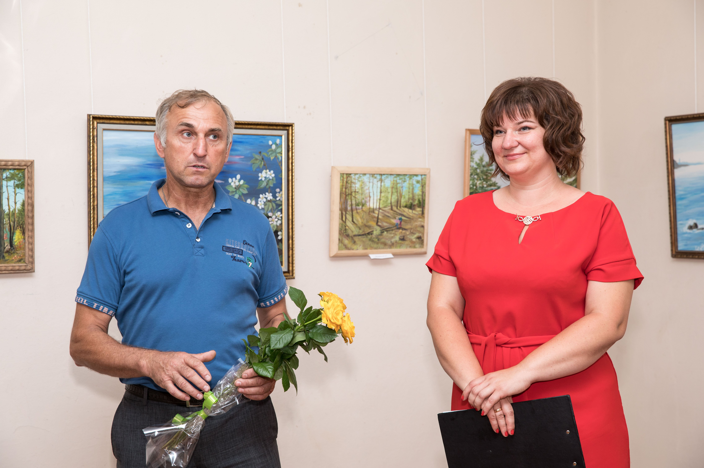

Милуюсь цією красою і я...
{kind=link}
Слобожанські краєвиди нерідко називають українською Швейцарією. І це справді так. Хто хоч раз був на Зміївщині,
той не міг не замилуватися краєвидами Коропових Хуторів, величчю козацьких могил, спокійною красою луків
Сіверського Дінця.
Слобожанщина унікальна людьми, землею, особливим географічним смаком коли хочете. Не вірите? Приїздіть,
торкніться душею цїєї землі.
… Тетяна Пархоменко народилася у Німеччині, де батько був військовослужбовцем, а мати вчителювала. Згодом
родина повернулася до України в рідне село Лиман на Зміївщині. Тетяна художниця- самородок і надзвичайно
талановита. Коли вперше відчула потяг до малювання сказати напевно не може, але потребу душі відтворити
красу у фарбі стримати не змогла. Та й навіщо?...

{kind=link}
Прониклива пейзажна лірика на полотні то є не тільки художня майстерність, то є любов. Чиста, вірна(тому й переконлива) -до землі, яка народила та виплекала.
…Коли б’ють гармати, музи не мовчать. Красиве та корисне то є теж зброя – вона виховує нас, робить сильнішими , добрішими.
… Зупиніться перед картинами Тетяни Пархоменко , тихо гляньте і відчуйте щемне тепло української землі, яку ви вже ніколи не зможете розлюбити…
{kind=link}
{kind=link}
{kind=link}
Виставкова діяльність:
• 2008 р. - участь в обласній виставці Харківщини «З народних джерел», що проходила в Музеї народного мистецтва Слобожанщини;
2012 р. - участь у виставці «Мальовнича Зміївщина» в Харківському центрі культури та мистецтва;
• 2016р – участь у виставці «На пагорбах сходжень...» присвяченій художнику Сергію Майбороді;
• 2016 р. – персональна виставка в Зміївському краєзнавчому музеї;
• 2017р. – участь у міжнародному пленері «По місцях Зінаїди Серебрякової» з подальшими виставками у Зміївському краєзнавчому музеї, Музеї славетних харків’ян ім. К. Шульженко, Харківської художньої галереї ім.. Г. Семирадського, Харківського художнього музею, Пархомівського художнього музею ім. О.Ф. Луньова, Центральної наукової бібліотеки ХНУ ім. В.Н.Каразіна.
• 2018р. – дипломант міжнародної виставки-конкурсу живопису «Український тиждень мистецтв» у Центральному будинку Художника (Київ).
• 2018р.- персональна виставка в Харківському обласному Центрі культури та мистецтв.
• 2018р.- персональна виставка в Харківському художньому музеї.
• 2018р. – учасниця виставки «Слобожанське розмаїття» в Харківському обласному Центрі культури та мистецтв.
• 2018р. – персональна виставка в центрі «Імідж» м. Чугуїв.
• 2018р. - учасниця всеукраїнської Ювілейної виставки до 80 річчя ХОНСХУ.
• 2018р. – персональна виставка в галереї «Мистецтво Слобожанщини» м. Харків.
• 2018р. - персональна виставка «Слобожанщина - мій рідний край» у інформаційно-виставковому центрі «Бузок» м. Харків.
• 2018р. – всеукраїнська «Різдвяна виставка» в Будинку художника м. Харків.
• 2018р. – виставка «Портрет родини в інтер’єрі» в галереї «Мистецтво Слобожанщини» присвячена пам’яті З. Серебрякової. м. Харків.
• 2019р. – виставка «Портрет родини в інтер’єрі» присвячена пам’яті З. Серебрякової. м. Чугуїв.
• 2019р. –міжнародна виставка "Арт-Поезія – Неділя мистецтв в Ізраїлі", тема: «Мистецтво та поезія» м. Тель-Авів (Ізраїль)
• 2008 р. - участь в обласній виставці Харківщини «З народних джерел», що проходила в Музеї народного мистецтва Слобожанщини;
2012 р. - участь у виставці «Мальовнича Зміївщина» в Харківському центрі культури та мистецтва;
• 2016р – участь у виставці «На пагорбах сходжень...» присвяченій художнику Сергію Майбороді;
• 2016 р. – персональна виставка в Зміївському краєзнавчому музеї;
• 2017р. – участь у міжнародному пленері «По місцях Зінаїди Серебрякової» з подальшими виставками у Зміївському краєзнавчому музеї, Музеї славетних харків’ян ім. К. Шульженко, Харківської художньої галереї ім.. Г. Семирадського, Харківського художнього музею, Пархомівського художнього музею ім. О.Ф. Луньова, Центральної наукової бібліотеки ХНУ ім. В.Н.Каразіна.
• 2018р. – дипломант міжнародної виставки-конкурсу живопису «Український тиждень мистецтв» у Центральному будинку Художника (Київ).
• 2018р.- персональна виставка в Харківському обласному Центрі культури та мистецтв.
• 2018р.- персональна виставка в Харківському художньому музеї.
• 2018р. – учасниця виставки «Слобожанське розмаїття» в Харківському обласному Центрі культури та мистецтв.
• 2018р. – персональна виставка в центрі «Імідж» м. Чугуїв.
• 2018р. - учасниця всеукраїнської Ювілейної виставки до 80 річчя ХОНСХУ.
• 2018р. – персональна виставка в галереї «Мистецтво Слобожанщини» м. Харків.
• 2018р. - персональна виставка «Слобожанщина - мій рідний край» у інформаційно-виставковому центрі «Бузок» м. Харків.
• 2018р. – всеукраїнська «Різдвяна виставка» в Будинку художника м. Харків.
• 2018р. – виставка «Портрет родини в інтер’єрі» в галереї «Мистецтво Слобожанщини» присвячена пам’яті З. Серебрякової. м. Харків.
• 2019р. – виставка «Портрет родини в інтер’єрі» присвячена пам’яті З. Серебрякової. м. Чугуїв.
• 2019р. –міжнародна виставка "Арт-Поезія – Неділя мистецтв в Ізраїлі", тема: «Мистецтво та поезія» м. Тель-Авів (Ізраїль)
{kind=link}
{kind=link}
{kind=link}
Така замітка з'явилася після виставки у газеті "Вісті Зміївщини".